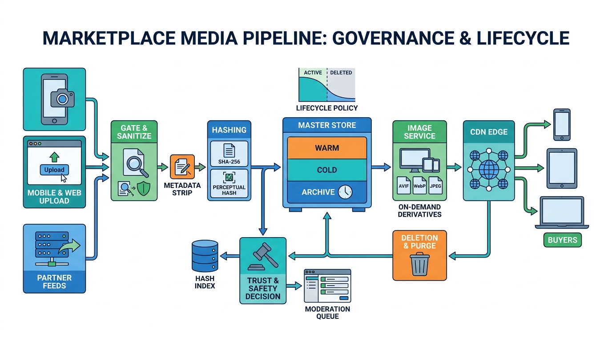

Part II — LISTING: Modeling the Thing Being Sold
Photos Sell: Media Pipelines for Listings

Image generated by Google Gemini (gemini-3-pro-image-preview)
Part II — LISTING: Modeling the Thing Being Sold

Image generated by Google Gemini (gemini-3-pro-image-preview)